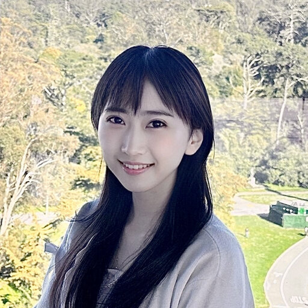

Wanyu Bian 卞婉瑜
Scientist / Senior ML Engineer · Multimodal AI · Medical Imaging · Representation Learning
Summary
I am a Senior Machine Learning Engineer at with 7+ years of applied research experience in generative AI, mathematical optimization, and large-scale model development. Published 10+ first-author papers and contributed to multiple patents spanning foundation modeling, diffusion models, meta-learning, and vision–language systems. Expert in bridging deep theoretical understanding with scalable engineering and responsible AI deployment for high-impact, safety-critical domains such as medical imaging and diagnostic automation.
Expertise: Generative AI · Diffusion & Transformer Models · Vision–Language Modeling · Optimization Algorithms · Responsible AI · Scalable ML Infrastructure
Education
-
Ph.D. in Applied Mathematics, University of Florida, Gainesville, FL
Advisor: Yunmei Chen Aug 2017 – Aug 2022 -
M.S. in Applied Mathematics, University of Florida, Gainesville, FL
Advisor: Yunmei Chen Aug 2017 – May 2019 - B.S. in Applied Mathematics & Statistics, University of Missouri, Columbia, MO Aug 2013 – May 2017
Awards & Leadership
- MICCAI 2022 NIH Participation Award
- MICCAI 2020 Student Participation Award
- SIAM Student Travel Award 2020
- President, AMS Graduate Student Chapter (UF, 2020–2022)
- Research Chair, AWM UF (2019–2022)
- DataFest “Best in Show,” University of Missouri, 2017